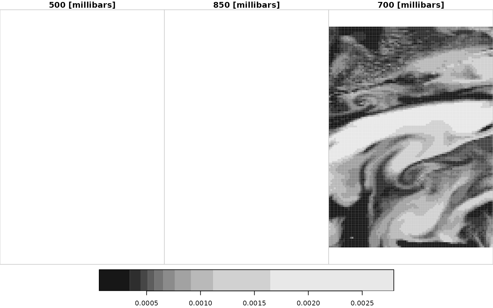
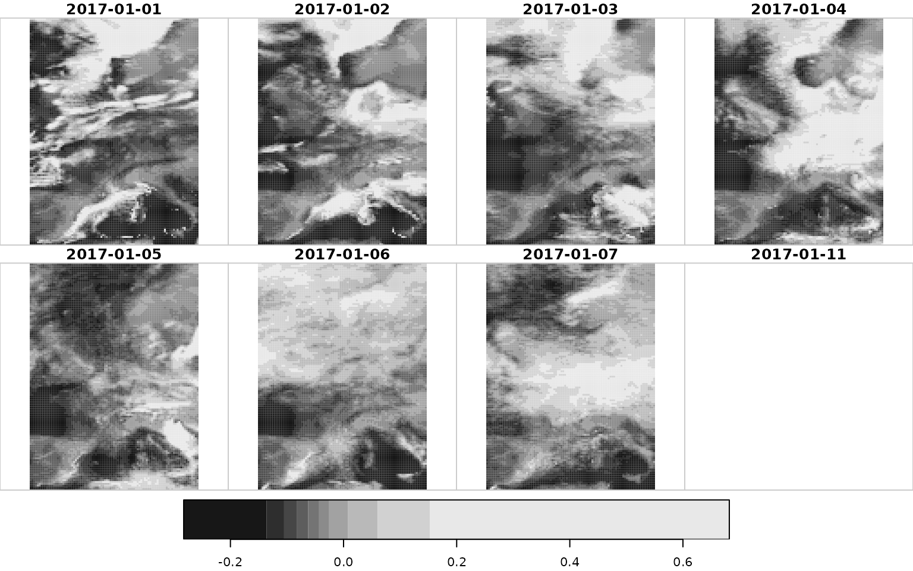

This manual shows how to download forecast data which includes both high-resolution forecasts (the deterministic run) as well as ensemble forecasts (there is a dedicated vignette for hindcasts/reforecasts). It works the very same as for all other EUPP gridded data sets, however, there are some more types available.
High-resolution forecasts
type = "hr" specifies downloading data from the high-resolution ECMWF forecast run (deterministic run). Note that the data set is provided on the same spatial resolution as all other gridded EUPP data sets (\(0.25\) degrees regular ll grid).
High-resolution forecasts are available on multiple levels:
-
"surface": surface fields (used as example in the following sections) -
"pressure": pressure level data (see here) -
"efi"": extreme forecast index data (see here)
Specify data to be downloaded
Step one is to set up before starting downloading data a configuration object must be created using eupp_config() which contains the specification of the data to be retrieved.
In this case high-resolution forecasts initialized on three different days, only forecasts for "2t" (2m air temperature) and "tcc" (total cloud cover) including forecasts 12h ahead up to 96h ahead from initialization in a 12-hourly interval.
# Loading the package
library("eupp")
# Creating a vector of dates (character string in ISO representation works fine)
# specifying the date of model initialization (00 UTC).
dates <- c("2018-01-01", "2018-01-08", "2018-01-15")
# Create custom configuration
conf <- eupp_config(product = "forecast",
level = "surface",
type = "hr", # high-resolution forecast run
date = dates, # dates
parameter = c("2t", "tcc"), # single parameter
steps = seq(12, 96, by = 12), # 12-hrly +12 to +96
cache = "_cache") # optionalThe function returns an object of class eupp_config containing the data of interest used for downloading the data in a second step.
print(conf)## EUPP Config
## Product: forecast (fcs)
## Level: surface
## Type: hr
## Date(s): 2018-01-01,2018-01-08,2018-01-15
## Parameter: 2t, tcc
## Steps: 12, 24, 36, 48, 60, 72, 84, 96
## Version: 0
## Cache: _cache
## Area: not definedDownloading high-resolution forecast data
For all gridded EUPP data sets three options for downloading the data exist. eupp_download_gridded() allows to download and store the data set on disc (GRIB version 1 or NetCDF). Alternatively the data can directly be retrieved as stars objects.
Note that getting the data in the NetCDF format as well as retrieving the data as stars objects require the ecCodes tools to be installed (namely the console tools grib_set and grib_to_netcdf).
eupp_download_gridded(conf, "_test.grb", "grib", overwrite = TRUE) # GRIB
eupp_download_gridded(conf, "_test.nc", "nc", overwrite = TRUE) # NetCDF
data <- eupp_get_gridded(conf) # starsProcessing high-resolution forecast gridded data
For more details on point-wise interpolation and additional stars features please have a look at the vignette for Gridded Analysis data. Just a series of commands for testing:
library("sf")
# Create simple features data.frame; define locations
locations <- data.frame(name = c("Innsbruck", "Brussels"),
lon = c(11.39, 4.35),
lat = c(47.27, 50.85))
locations <- st_as_sf(locations, coords = c("lon", "lat"))
# Perform bilinear interpolation; coerce to data.frame
interpolated <- st_extract(data, locations, bilinear = TRUE, atname = "name")
head(interpolated, n = 4)## Simple feature collection with 4 features and 4 fields
## Geometry type: POINT
## Dimension: XY
## Bounding box: xmin: 4.35 ymin: 47.27 xmax: 11.39 ymax: 50.85
## CRS: NA
## geometry name t2m tcc time
## 1 POINT (11.39 47.27) Innsbruck 272.0790 0.9999246 2018-01-01 12:00:00
## 2 POINT (4.35 50.85) Brussels 280.7002 1.0000000 2018-01-01 12:00:00
## 3 POINT (11.39 47.27) Innsbruck 268.0749 0.9993638 2018-01-02 00:00:00
## 4 POINT (4.35 50.85) Brussels 278.4105 0.9119369 2018-01-02 00:00:00
plot(data["t2m", , , 1:4])
plot(data["tcc", , , 1:4])
High-resolution pressure level forecasts
Only minor differences to surface data. All needed to be done is to set level = "pressure" and specify what parameter(s) to be downloaded. Note: There is no dedicated option to specify which levels An example:
data <- eupp_get_gridded(eupp_config("forecast", "pressure", "hr", date = "2017-01-01", steps = 12))
print(data)## stars object with 4 dimensions and 6 attributes
## attribute(s):
## Min. 1st Qu. Median Mean
## z [m^2/s^2] 5.064108e+04 5.260592e+04 5.413398e+04 5.378242e+04
## t [K] 2.613835e+02 2.670048e+02 2.719833e+02 2.713366e+02
## r [%] 5.476623e+00 2.482181e+01 5.561144e+01 5.289025e+01
## q [kg/kg] 6.032370e-05 4.774765e-04 6.527774e-04 8.333792e-04
## u [m/s] -1.095827e+01 9.673304e-01 5.093653e+00 5.651340e+00
## v [m/s] -2.369176e+01 -1.114679e+01 -2.385061e+00 -4.211166e+00
## 3rd Qu. Max. NA's
## z [m^2/s^2] 5.506532e+04 5.582745e+04 23250
## t [K] 2.759975e+02 2.808035e+02 23250
## r [%] 7.584404e+01 1.025626e+02 23250
## q [kg/kg] 1.002921e-03 2.792958e-03 23250
## u [m/s] 9.307507e+00 2.581224e+01 23250
## v [m/s] 1.912576e+00 9.163712e+00 23250
## dimension(s):
## from to offset delta refsys point
## x 1 93 -6.125 0.25 NA NA
## y 1 125 67.125 -0.25 NA NA
## level 1 3 NA NA udunits NA
## time 1 1 2017-01-01 12:00:00 UTC NA POSIXct NA
## values x/y
## x NULL [x]
## y NULL [y]
## level [500,850) [millibars], [850,700) [millibars], [700,550) [millibars]
## time NULL
plot(data["q"])
@TODO: ggplot() + geom_stars(data["q"]) fails; rescale does not know how topick a scale for an object of class c("eupp_stars", "eupp_stars"). Bug in rescale()?
High-resolution efi forecasts
The extreme forecast index is a second-level product derived from the entire atmosphere of all ensemble forecasts projected to a 2D plane. Thus, there are no members or dedicated levels and only available aggregated over 24 hour time periods available at 00 UTC (e.g., +0-24 hours ahead, +24-48 hours ahead, …).
To get the data simply ask for level = "efi" (here not declaring steps to get all available forecast steps).
data <- eupp_get_gridded(eupp_config("forecast", "efi", date = "2017-01-01"))## Warning: ignoring unrecognized unit: (-1 to 1)
## Warning: ignoring unrecognized unit: (-1 to 1)
## Warning: ignoring unrecognized unit: (-1 to 1)
## Warning: ignoring unrecognized unit: (-1 to 1)
## Warning: ignoring unrecognized unit: (-1 to 1)
## Warning: ignoring unrecognized unit: (-1 to 1)
## Warning: ignoring unrecognized unit: (-1 to 1)
## Warning: ignoring unrecognized unit: (-1 to 1)
## Warning: ignoring unrecognized unit: (-1 to 1)
## Warning: ignoring unrecognized unit: (-1 to 1)
## Warning: ignoring unrecognized unit: (-1 to 1)
## Warning: ignoring unrecognized unit: (-1 to 1)
## Warning: ignoring unrecognized unit: (-1 to 1)
## Warning: ignoring unrecognized unit: (-1 to 1)
## Warning: ignoring unrecognized unit: (-1 to 1)
## Warning: ignoring unrecognized unit: (-1 to 1)
## Warning: ignoring unrecognized unit: (-1 to 1)
## Warning: ignoring unrecognized unit: (-1 to 1)
print(data)## stars object with 3 dimensions and 9 attributes
## attribute(s):
## Min. 1st Qu. Median Mean 3rd Qu. Max.
## capesi -0.2831616 -0.07814902 -0.02778175 0.005770776 0.05918256 0.7969165
## fg10i -0.9516138 -0.26998099 0.03233945 0.026841566 0.32603535 0.8804526
## capei -0.2826062 -0.09339107 -0.04319863 -0.015735102 0.03072114 0.6819864
## sfi -0.4932534 -0.04908861 -0.01143046 0.023984510 0.01341792 0.9105301
## ws10i -0.9654656 -0.23502707 0.03710891 0.018169095 0.25672955 0.9143580
## t2i -0.8814220 -0.30859847 -0.15431316 -0.129899379 0.04896431 0.8110418
## mx2ti -0.9117949 -0.27019221 -0.05012495 -0.035496654 0.18584630 0.8369220
## mn2ti -1.0000010 -0.34494189 -0.16604969 -0.155640683 0.02919724 0.8383780
## tpi -0.6422855 -0.23467839 -0.08760282 -0.036288901 0.12452113 0.8850583
## NA's
## capesi 11625
## fg10i 11625
## capei 11625
## sfi 11625
## ws10i 0
## t2i 0
## mx2ti 11625
## mn2ti 11625
## tpi 0
## dimension(s):
## from to offset delta refsys point values x/y
## x 1 93 -6.125 0.25 NA NA NULL [x]
## y 1 125 67.125 -0.25 NA NA NULL [y]
## time 1 8 NA NA POSIXct NA 2017-01-01,...,2017-01-11
plot(data["capei"])
Ensemble forecasts
type = "ens" specifies downloading data from the operational ensemble. Works the same as for high-resolution forecasts (deterministic run) except an optional argument members is available. The argument allows to specify which ensemble forecast members/perturbations shall be processed.
-
0: identifies the control run (treated the same as the perturbations) - If nothing is specified (
members = NULL), the control run plus all available ensemble members will be downloaded/processed.
Specify data to be downloaded
As always, eupp_config() has to be called to specify what should be processed in the next step.
In this case ensemble forecasts initialized on three separate days (00 UTC) for one single forecast parameter ("cp" = convective precipitation; "surface" variable) valid at a forecast horizon of +120 hours.
In addition, members = 0:3 defines to only download gridded data for the control run (0) and the first three perturbations.
# Loading the package
library("eupp")
# Create 'dates' vector; character vectors (ISO format) work fine
dates <- c("2018-01-01", "2018-01-08", "2018-01-15")
# Create custom configuration
conf <- eupp_config(product = "forecast",
level = "surface",
type = "ens", # high-resolution forecast run
date = "2017-01-02", # dates
parameter = "cp", # one parameter
steps = 120, # only +10 days forecast
members = 0:3, # control run + members 1, 2, 3
cache = "_cache") # optional
print(conf)## EUPP Config
## Product: forecast (fcs)
## Level: surface
## Type: ens
## Date(s): 2017-01-02
## Parameter: cp
## Steps: 120
## Members: 0, 1, 2, 3
## Version: 0
## Cache: _cache
## Area: not definedDownloading ensemble forecast data
Once the configuration object has been created we can download the data. For more details see section “Downloading high-resolution forecast data” and/or the corresponding section in “Analysis Data”.
Note that this, again, requires ecCodes tools to be installed (namely grib_set and grib_to_netcdf).
eupp_download_gridded(conf, "_test.grb", "grib", overwrite = TRUE) # GRIB
eupp_download_gridded(conf, "_test.nc", "nc", overwrite = TRUE) # NetCDF
data <- eupp_get_gridded(conf) # starsProcessing ensemble-forecast gridded data
For more details on point-wise interpolation and additional stars features please have a look at the vignette for “Interpolating analysis data”. One of the main differnces: The member number (or perturbation number) will be added to the variable name.
library("sf")
# Create simple features data.frame; define locations
locations <- data.frame(name = c("Innsbruck", "Brussels"),
lon = c(11.39, 4.35),
lat = c(47.27, 50.85))
locations <- st_as_sf(locations, coords = c("lon", "lat"))
# Perform bilinear interpolation; coerce to data.frame
interpolated <- st_extract(data, locations, bilinear = TRUE, atname = "name")
head(interpolated, n = 10)## Simple feature collection with 2 features and 5 fields
## Geometry type: POINT
## Dimension: XY
## Bounding box: xmin: 4.35 ymin: 47.27 xmax: 11.39 ymax: 50.85
## CRS: NA
## geometry name cp_0 cp_1 cp_2
## 1 POINT (11.39 47.27) Innsbruck 0.0127980483 0.0144467867 0.010102039
## 2 POINT (4.35 50.85) Brussels 0.0006607978 0.0006633455 0.001270559
## cp_3
## 1 0.012403504
## 2 0.002256763
plot(data["cp", , , 1:4])
Available analysis data
In case you are not sure which fields and/or steps are available simply download the full inventory for one specific day. The resulting data.frame contains all information required.
# Surface fields available
conf_surface <- eupp_config(product = "analysis",
level = "surface",
date = "2017-06-01",
cache = "_cache")
inv_surface <- eupp_get_inventory(conf_surface)
head(subset(inv_surface, select = c(param, init, step, valid)))## param init step valid
## 1 2t 2017-06-01 00:00:00 0 2017-06-01
## 2 10u 2017-06-01 00:00:00 0 2017-06-01
## 3 10v 2017-06-01 00:00:00 0 2017-06-01
## 4 tcc 2017-06-01 00:00:00 0 2017-06-01
## 5 tp 2017-05-31 18:00:00 6 2017-06-01
## 6 cape 2017-06-01 00:00:00 0 2017-06-01
unique(inv_surface$param)## [1] "2t" "10u" "10v" "tcc" "tp" "cape" "stl1" "sshf" "slhf"
## [10] "tcw" "tcwv" "swvl1" "ssr" "str" "sd" "cp" "cin" "ssrd"
## [19] "strd" "10fg" "mx2t" "mn2t"
# Pressure level data available
conf_pressure <- eupp_config(product = "analysis",
level = "pressure",
date = "2017-06-01",
cache = "_cache")
inv_pressure <- eupp_get_inventory(conf_pressure)
head(subset(inv_pressure, select = c(param, levelist, init, step, valid)))## param levelist init step valid
## 1 z 500 2017-06-01 00:00:00 0 2017-06-01 00:00:00
## 2 z 500 2017-06-01 01:00:00 0 2017-06-01 01:00:00
## 3 z 500 2017-06-01 02:00:00 0 2017-06-01 02:00:00
## 4 z 500 2017-06-01 03:00:00 0 2017-06-01 03:00:00
## 5 z 500 2017-06-01 04:00:00 0 2017-06-01 04:00:00
## 6 z 500 2017-06-01 05:00:00 0 2017-06-01 05:00:00
unique(inv_pressure$param)## [1] "z" "u" "v" "q" "t" "r"